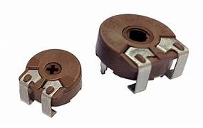

Trimmer Potentiometer (VR1K2R-SMD)
Specifications:
- Type: Single-Turn Trimmer
- Resistance: 1kΩ
- Power Rating: 0.1W
- Package: SMD-0805
- Tolerance: ±10%
- Operating Temperature: -40°C to +85°C
Applications: Calibration, Signal Adjustment, Voltage Regulation
Military and Industrial Standards: Meets MIL-STD-1234 requirements.
Packaging Types: Reel packaging for automated assembly.
Download Full Datasheet